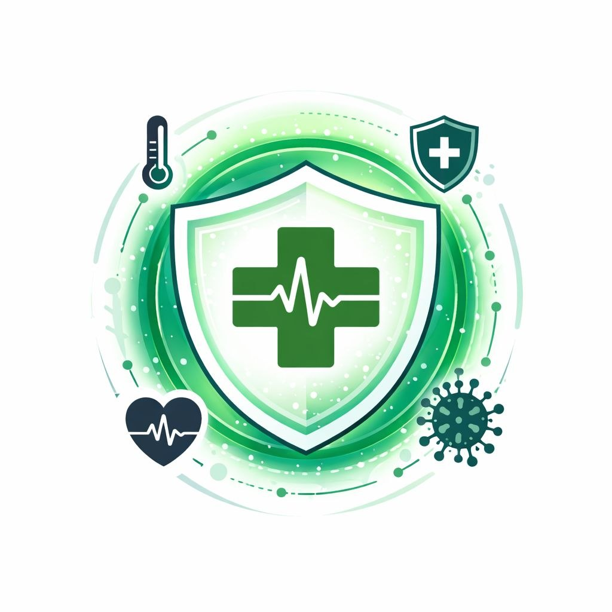
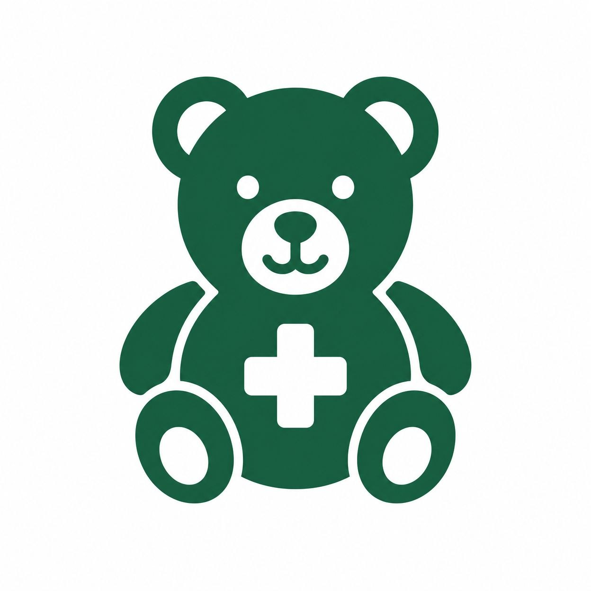

Hydratation
Buvez au moins 8 verres d'eau par jour pour maintenir votre équilibre hydrique et soutenir vos fonctions corporelles.
En savoir plusDécouvrez nos conseils et ressources pour une meilleure prévention sanitaire
Buvez au moins 8 verres d'eau par jour pour maintenir votre équilibre hydrique et soutenir vos fonctions corporelles.
En savoir plusDormez 7 à 8 heures chaque nuit pour permettre à votre corps de se régénérer et renforcer votre système immunitaire.
En savoir plusPratiquez au moins 30 minutes d'exercice quotidien pour améliorer votre santé cardiovasculaire et mentale.
En savoir plusAdoptez une alimentation équilibrée riche en fruits, légumes et protéines pour renforcer votre santé.
En savoir plusLavez régulièrement vos mains et maintenez une bonne hygiène pour prévenir les infections.
En savoir plusConsultez régulièrement votre médecin pour un suivi médical et des dépistages préventifs.
En savoir plus
La vaccination est l'une des mesures les plus efficaces pour prévenir les maladies infectieuses. Elle protège non seulement vous-même, mais aussi votre communauté.

Le paludisme est une maladie grave transmise par les moustiques. Voici les mesures essentielles pour vous protéger.

La santé des enfants est une priorité. Découvrez nos conseils pour assurer le bien-être et le développement optimal de vos enfants.
Consultez nos professionnels de santé pour un suivi personnalisé et des conseils adaptés à votre situation.